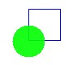
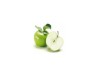

This tutorial present the shape appearance property.
appearance property define the shape color, texture, ...
Note:
See Draw shapes tutorial to draw a shape.
See Appearance node documentation.
In 2D scene, material is define via a Material2D node.
With:
We try to draw 2 shapes.
1st shape: rectangle / blue / opaque / not filled.
2nd shape: circle / green / transparent (10%) / filled / over the 1st shape.

Final code:
With MeMo, we can apply a image (or a video) on shape.
texture field can be set to an ImageTexture
or a MovieTexture.
See ImageTexture node and
MovieTexture node documentation.
Following example draw a square with a picture:
Note:
Picture file is in "src" folder.

See Draw picture tutorial for more examples.
And, an MovieTexture example:
Note:
MovieTexture node is not
supported by the micro emulator (default SDK emulator).
Install the Sun Wireless ToolKit to test
video (MPEG video only).
See video tutorials for more informations.